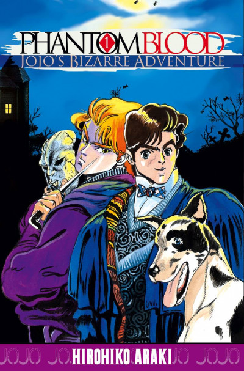

Accueil
Favoris
Mangas
Presentation

nom:
auteur:
synopsis:
Liste Scan
tome 1
Lu
chapitre 1 : L'Envahisseur
Lu
chapitre 2 : Un Nouvel Ami
Lu
chapitre 3 : Chère Erina
Lu
chapitre 4 : Un Combat A Remporter
Lu
chapitre 5 : Danny En Flamme
Lu
chapitre 6 : La Lettre Surgie Du Passé
Lu
chapitre 7 : Serment Paternel
Lu
chapitre 8 : Bataille A Orge Street
tome 2
Lu
chapitre 9 : L'Expérimentation Du Masque
Lu
chapitre 10 : La Soif De Sang !
Lu
chapitre 11 : Au-Dela De L'Etre Humain !
Lu
chapitre 12 : Les Deux Bagues
Lu
chapitre 13 : Le monstre Immortel
Lu
chapitre 14 : L'Attack Du Mort-Vivant
Lu
chapitre 15 : Adieu, Mon Enfance
Lu
chapitre 16 : La Déesse De L'Amour
Lu
chapitre 17 : Un Si Doux Souvenir
tome 3
Lu
chapitre 18 : Jack Le Dément Et L'Etrange Zeppeli
Lu
chapitre 19 : Une Energie Miraculeuse
Lu
chapitre 20 : Drame Sur L'Océan
Lu
chapitre 21 : La Ville M'Audite
Lu
chapitre 22 : Fait Tienne La Peur
Lu
chapitre 23 : Le Vent Du Nord Et Le Viking
Lu
chapitre 24 : Invitation Pour Un Piege
Lu
chapitre 25 : La Puissance A glacer Le Sang Du Masque
Lu
chapitre 26 : Les Chevaliers Noirs
tome 4
Lu
chapitre 27 : Des Démons Vengeurs Surgis Du Passé
Lu
chapitre 28 : Les Braves Des 77 anneaux
Lu
chapitre 29 : L'Envoutement Du Chevalier Noire
Lu
chapitre 30 : Reposer En Héros
Lu
chapitre 31 : Les Ruines Des Chevaliers
Lu
chapitre 32 : Dans La Salle Du Dragon A Deux Tetes
Lu
chapitre 33 : Le Courage Du Lendemain
Lu
chapitre 34 : La Prophétie Du Vieux Maitre
Lu
chapitre 35 : Asséne Ta Colère
tome 5
Lu
chapitre 36 : Le Trio Du Lointain Passé
Lu
chapitre 37 : Doobie L'Etrange
Lu
chapitre 38 : Thunder Cross Split Attack
Lu
chapitre 39 : Combat Sanglant ! Jojo Et Dio !
Lu
chapitre 40 : Fire And Ice !
Lu
chapitre 41 : La Fin Du Démon !
Lu
chapitre 42 : Prélude A L'ouragan
Lu
chapitre 43 : La Dernière Onde !
Lu
chapitre 44 : Par-Delà L'oubli